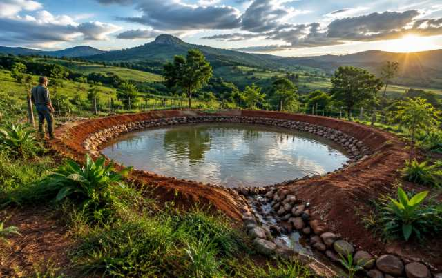

Finalizado

Itabirito · MG
Águas de Itabirito
Segurança hídrica e desenvolvimento sustentável no campo por meio de barraginhas, manejo conservacionista e acompanhamento técnico contínuo.
208Barraginhas
25Famílias
50Novas estruturas